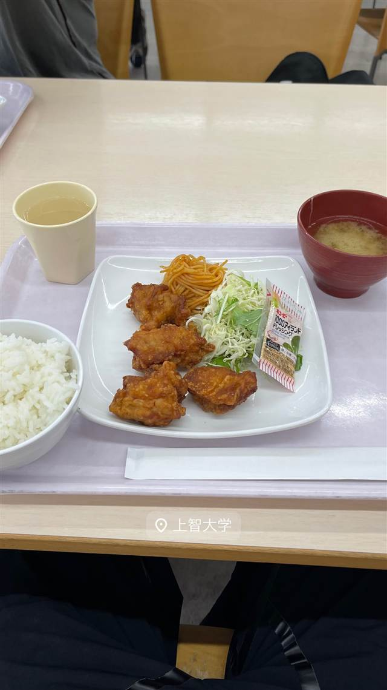

かつれつ 四谷たけだ
1935年築地創業「洋食たけだ」の流れを汲む、食べログ百名店の生姜焼き定食
かつれつ 四谷たけだ
四谷・しんみち通りの「かつれつ四谷たけだ」は、1935年築地創業の「洋食たけだ」の流れを汲む店。四谷で40年続いた「洋食エリーゼ」を営んでいた3代目が、2011年に揚げ物専門店として業態転換して生まれた、行列必至の人気店。
TRIVIA
へえ、という話
- 前身『洋食エリーゼ』は40年以上続いた四谷の名店で、閉店の翌日に『かつれつ四谷たけだ』として再オープンした
- ルーツは1935年に築地で創業した『洋食たけだ』にまで遡る
| 創業 | 2011年9月開業（前身「洋食エリーゼ」は1970年開業）。 |
|---|---|
| 系譜 | 1935年に築地で創業した「洋食たけだ」の2代目が1970年に四谷で開いたのが「洋食エリーゼ」。3代目・武田昌之氏が跡を継ぎ、2011年に揚げ物専門店「かつれつ四谷たけだ」へ業態転換した。 |
| 看板 | かつれつ（カツ）各種。生姜焼き定食も人気。 |
| 掲載・受賞 | 食べログ「食堂・定食 百名店」選出。 |
| 予算 | 昼 ¥1,000～¥1,999 夜 ¥1,000～¥1,999 |
| 定休日 | 日曜・祝日 |
| 予約 | 予約不可 |
| 場所 | 四ツ谷駅 東京都新宿区四谷(しんみち通り沿い) |
| 注意 | 四谷駅すぐ、しんみち通り沿い。行列必至の人気店。 |
食べたもの：生姜焼き定食
NEARBY
近い店・同じ系統の店
-
 ★
牛骨 四谷三丁目
一条流がんこ総本家分家 四谷荒木町（旧店名：一条流がんこラーメン総本家）
牛骨と魚介の強烈な塩味、通称「悪魔ラーメン」
昼 ¥1,000～¥1,999
★
牛骨 四谷三丁目
一条流がんこ総本家分家 四谷荒木町（旧店名：一条流がんこラーメン総本家）
牛骨と魚介の強烈な塩味、通称「悪魔ラーメン」
昼 ¥1,000～¥1,999
-

から揚げ 四ツ谷駅 上智大学 四谷キャンパス 学生食堂 -
 ホルモン 四谷三丁目
焼肉 名門
厚切りタンと長いホルモン、肉を焼きながら歌う店主
ホルモン 四谷三丁目
焼肉 名門
厚切りタンと長いホルモン、肉を焼きながら歌う店主
-
 定食・食堂 恵比寿
土鍋炊ごはん なかよし 本店
土鍋で炊いたごはんがおかわり自由、都内11店舗に展開する恵比寿の老舗定食店
昼 ～¥999 夜 ¥3,000～¥3,999
定食・食堂 恵比寿
土鍋炊ごはん なかよし 本店
土鍋で炊いたごはんがおかわり自由、都内11店舗に展開する恵比寿の老舗定食店
昼 ～¥999 夜 ¥3,000～¥3,999
-
 定食・食堂 橋本
よしの食堂
1966年創業、壁一面50種類超のメニューが並ぶ孤独のグルメのロケ地
昼 ～¥999 夜 ～¥999
定食・食堂 橋本
よしの食堂
1966年創業、壁一面50種類超のメニューが並ぶ孤独のグルメのロケ地
昼 ～¥999 夜 ～¥999
-
 定食・食堂 新橋駅
さかな 地鶏 舞浜
食べログ居酒屋百名店、身がほろりとした焼き鮭定食
昼 ¥1,000～¥1,500 夜 ¥5,000
定食・食堂 新橋駅
さかな 地鶏 舞浜
食べログ居酒屋百名店、身がほろりとした焼き鮭定食
昼 ¥1,000～¥1,500 夜 ¥5,000